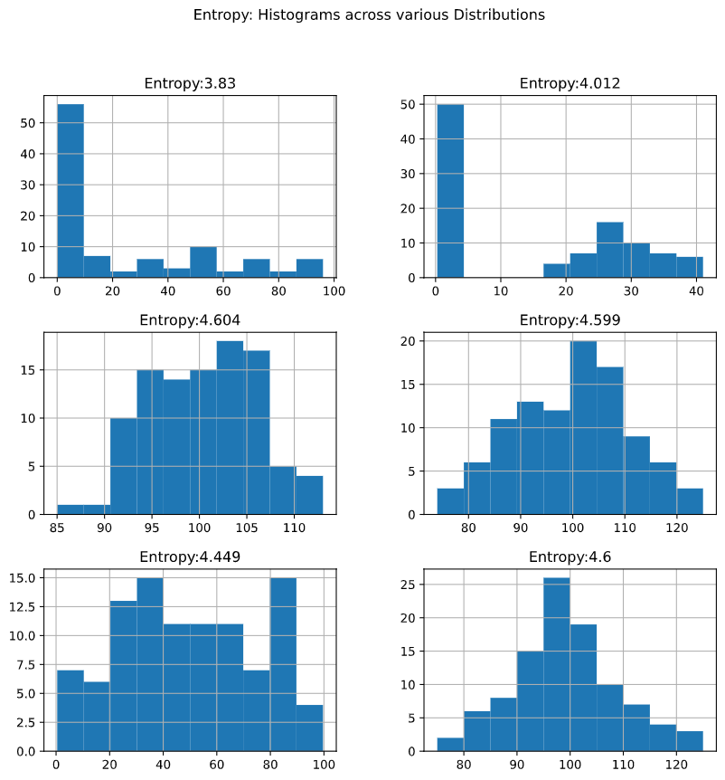
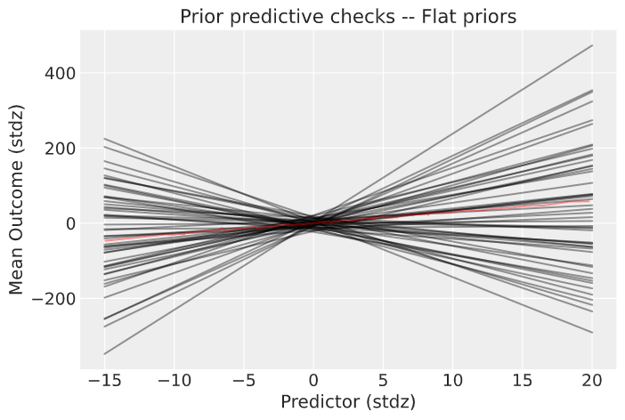
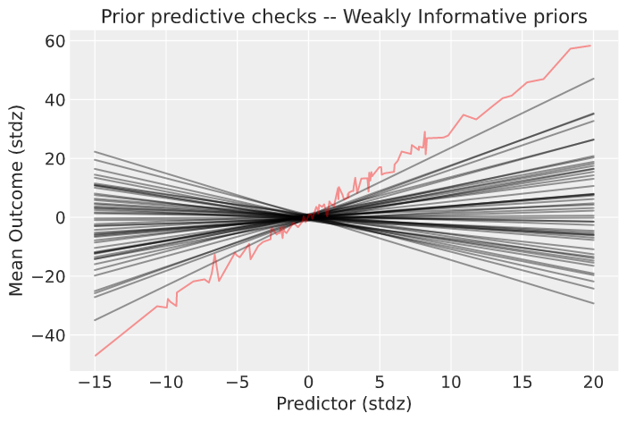
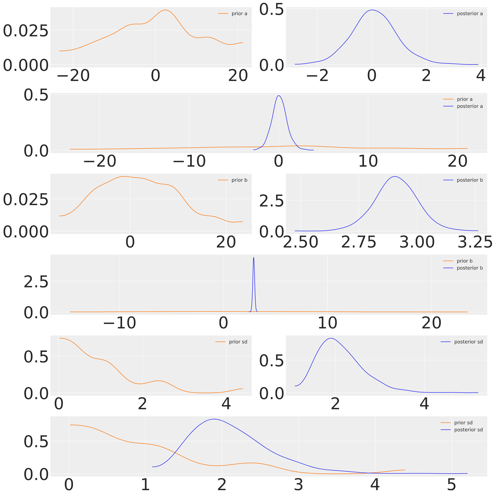

There is a rumour of ignorant fish; so involved in the ocean they fail to notice the water around them, what it is and what it could be. There is another cliche about the internet and its denizens drowning in information. There is something to both these images, but the second is too charitable. It suggests a light consistency to the viscous texture of the flow, instead of the congealed sludge that drips down our throat choking off the air. The oozing density of the swamp presents a range of difficulties for even reasonably self aware fish. Each has to struggle to intepret the evolving environment.
The problem, familiar now, is one of information retrieval, filtering and ranking. For much of these tasks we delegate and trust others to siphon the sludge and recommend items of value, but we each face unique challenges. Sinkholes tailored to our interests obscure facts in favour of maximising our propensity to purchase. How then do we clamber out of this rats nest?
Simple Models are False. Complex ones too.
We each start from different bases and face different difficulties acquiring new knowledge. One way to conceive of the range of barriers is to think of reasoning from different probabilistic priors. This language is ubiquitous today, but stems from a historic dispute in probability theory. Traditional expositions of probability focused on a host of well understood parametric models abstracted from observations of frequency. Watch enough card games and you come to appreciate the regularity of the hands, their odds and value. The thought is that some underlying process drives what we see and this process is well approximated by our expectations. Or if we can’t yet tease out the pattern, further observations will help us converge on the reality. This view of learning is apt (indeed, reliable) in certain special cases where the observable phenomena adheres to consistent patterns over frequent observation. But probability theory, properly construed, is a much more general study.
So too is learning properly done. There is no uniform or inevitable convergence of opinion to fact. Instead we progress in fits and starts, become diverted, digress and procrastinate. We may be held back or belabor certain points obvious to others. Only in rare cases is knowledge amenable to easy summary rules. These rules, cited often to the point of cliche, are celebrated for their simplicity and generality, but the tendency is misleading. Like the host of simple parametric probability models these rules have wide applicability but they are the exception. Most knowledge is messier, complex and cobbled together from scraps of metaphor and analogy. The cumulative accretion of these clues allow us to grapple the world with specific hooks. Simple rules, too simple, are mostly just ignorance uplifted.
Peter Godfrey Smith explains how both the drive to simplicity and need for complexity oscillates in explanations of evolutionary mechanisms.
“Standard recipes for change by natural selection are products of trade-offs, often unacknowledged, between the desire to capture all genuine cases of natural selection in a summary description and the desire for describe a simple and causally transparent machine. The two motives corresspond to two different kinds of understanding that we can seek in any theoretical investigation…Understanding is achieved via similarity relations between the simple cases we have picked apart in detail and the cloud of more complicated ones.” - pg4 Darwinian Populations and Natural Selection by Peter Godfey-Smith
A similar tension is nicely brought out in the “dispute” between objective Bayesians and their subjecitivist cousins. Both propose approaches to learning as methods for updating our view of the relevant probabilities. Starting with the following rule:
\[ \underbrace{p(T | D)}_{posterior} = \frac{\overbrace{p(T)}^{prior}\overbrace{p(D | T)}^{likelihood}}{\sum_{i}^{N} p(D | T_{i})} \]
We update our theory \(T\) based on data \(D\) by computing the posterior in light of our prior specification for the probability of \(T\). The aforementioned dispute revolves around how we ought to specify \(p(T)\). How much structure is implicit in the specification. If our problem is allocating attention, our theory comes to something like which voice should I listen to, given their record against the data, broad reputation and reliability. But how much detail is too much? We’d become lost with exhaustive precision, but it’s unclear how simple is simple enough.
Maximise Entropy: Choice under minimal information
How then do we choose what to learn, where to spend our time or resources? One school of thought emphasises an agnostic attitude. Treat all options equally unless you know better. In the limiting case we array all possible choices before you and if they’re equally appealing, you’re indifferent and ought to pick one indiscriminately. This ties very neatly to a characterisation of how you should frame your beliefs under ignorance and seek their improvement. Simultaneously the method gives rise to a natural measure of information content as deviations from a state of no information.
Spread out \(m\) options very thinly and we weigh their probability with a multinomial distribution where the probabilities \(p\_{1} =... = p\_{m}\) are flat.
\[ \frac{N!}{n_{1}!n\_{2}!... n_{m}!}p_{1}^{n_{1}}p_{2}^{n_{2}}... p_{m}^{n_{m}} \text{ where } \sum_{1}^{m} n = N \]
which is maximised when \(W = \frac{N!}{n\_{1}!n\_{2}!... n\_{m}!}\) or when a monotonic transformation reaches its peak. Choosing the following form we get:
\[ \frac{1}{N}log W = \frac{1}{N}log\frac{N!}{n_{1}!n\_{2}!... n_{m}!}\] \[ \sim \frac{1}{N}log\frac{N!}{Np_{1}!Np_{2}!... Np_{m}!} \text{ by assumption} \] \[ = \frac{1}{N}\Big(log(N!) - \sum_{1}^{m}log(Np_{i}!) \Big) \]
Then taking the limit as \(N\) goes to infinity, we get by Stirling’s approximation:
\[ \lim_{0 \rightarrow \infty} \frac{1}{N}log W = \frac{1}{N} \Big(Nlog(N) - \sum\_{1}^{m}Np_{i}log(Np_{i}) \Big) \]
\[ = \Big(log(N) - \sum_{1}^{m}p_{i}log(Np_{i}) \Big) \] \[ = \Big(log(N) - \sum_{1}^{m}p_{i}(log(N) + log(p_{i})) \Big) \] \[ = log(N) - (\sum_{1}^{m}p_{i}log(N) + \sum_{1}^{m}p_{i}log(p_{i})) \] \[ = \Big(1 - \sum_{1}^{m}p_{i}\Big)log(N) - \sum_{1}^{m}p_{i}log(p_{i}) \] \[ = - \sum_{1}^{m}p_{i}log(p_{i}) \]
This last quantity is the entropy of the distribution also known as the expected value of the information content of the random variable \((X=x)\) with respect to a probabiliy distribution \(p\). Since we have:
\[ -log(p_{i}) =_{def} I(x_{i})_{p} \]
ensuring that the information in perfectly probable events is measured as -log(1) = -0 and impossible events convey the maximum amount of information. Everything in between finds its place on the spectrum of more or less surprising. Entropy, then, is a measure of information content over a random variable.
In making inferences on the basis of partial information we must use that probability distribution which has maximum entropy subject to what is known. This is the only unbiased assignment we can make; to use any other would amount to arbitrary assumption of information which by hypothesis we do not have…The maximum entropy distribution may be asserted for the positive reason that is uniquely determined as the one that is maximally non-commital with regard to the missing information. - pg 623, Information Theory and Statistical Mechanics, Jaynes (1957)
Claude’s Shannon’s work on information theory and and E.T. Jaynes synthesis of it with probability theory shows that information is not incidental to probability, but arises as naturally as other measures: mean, median and variance of probability distributions.
def entropy(x):
y = []
for i in x:
if i == 0:
y.append(0)
else:
y.append(i*np.log(i))
h = -sum(y)
return h
N = 100
d = {'A':np.concatenate([np.random.randint(0, N, 50),np.random.randint(0, 4, 50)]),
'B':np.concatenate([np.random.power(3, 50),np.random.poisson(30, 50)]),
'C':np.random.normal(100, 5, N),
'D':np.random.poisson(N, N),
'E':np.random.uniform(0, N, N),
'F':np.random.poisson(100, N)}
p = pd.DataFrame(data=d)
p_norm = p/p.sum(0)
H = p_norm.apply(entropy, axis=0)
p.columns = ['Entropy:' + str(np.round(h, 3)) for h in H]
p.hist(figsize=(10, 10))
plt.suptitle("Entropy: Histograms across various Distributions")
From the Bayesian perspective on learning, this characterisation suggests an approach to selecting appropriately informative priors. When we’re unsure or ignorant then we can choose prior distributions that maximise the entropy and thereby reflect our ignorance, since our credences should not exceed our evidence. This is not the same as treating all options equally. Maximal Entropy distributions are a much wider class of distribution e.g. if you’re confident of the mean and variance of a distribution but nothing else, then the Gaussian distribution is the maximum entropy distribution characterising your knowledge. The maximum entropy rule asks us to choose our priors based on the minimal information which describes the situtation. It can be justified as an abundance of caution where we commit to the least risky description of the data. But the paradigm goes wrong when choice requires discernment over informative options and outright misinformaiton. Against a flood of misinformation, of which we have little or no information to identify the bad actors the agnostic choice seems uncomfortably generous.
Informative or Weakly Informative Priors
One famous characterisation of bullshit due to G.A. Cohen is describes it as “unclarifiable unclarity”. Bad actors online flood the space with this kind of unverifiable garbage. That undoubtedly contributes to the noise, but the more fundamental issue is just the volume of actual information we need to filter. With this in mind the agnostic approach is too risk-averse, creating needless work.
N = 10
true_a, true_b, predictor = 0.5, 3.0, np.random.normal(loc=2, scale=6, size=N)
true_mu = true_a + true_b * predictor
true_sd = 2.0
outcome = np.random.normal(loc=true_mu, scale=true_sd, size=N)
predictor_scaled = standardize(predictor)
outcome_scaled = standardize(outcome)
prior_spec = {'a':[0, 10], 'b'[0, 10]}
with pm.Model() as model_1:
# flat priors on constant and beta coeffs
a = pm.Normal("a", prior_spec['a'][0], prior_spec['a'][1])
b = pm.Normal("b", prior_spec['b'][0], prior_spec['a'][1])
mu = a + b * predictor_scaled
# priors sd
sd = pm.Exponential("sd", 1.0)
# likelihood
obs = pm.Normal("obs", mu=mu, sigma=sd, observed=outcome_scaled)
# diagnostic and posterior data to sample from
prior_checks = pm.sample_prior_predictive(samples=50, random_seed=RANDOM_SEED)
trace_1 = pm.sample(1000, tune=2000, random_seed=RANDOM_SEED)
ppc = pm.sample_posterior_predictive(trace_1, var_names=["a", "b", "obs"],
random_seed=RANDOM_SEED)With the range of flat priors the possible space of linear models is wide and implausible. We build 50 linear models, one from each of the sampled values across the prior_checks and plot these against the real values.

By constraining our priors for the parameters of the linear model we significantly reduce the possible space of models. The choice here is a little artificial, but in a real problem the informative choices can be made based on knowledge of the problem at hand.
prior_spec = {'a':[0, 0.5], 'b'[0, 3]}
The parameter estimates drawn from the posterior distributions show that the data is sufficient to swamp the priors and give good estimates of the true coefficients, even with flat priors.

This suggests that the process of Bayesian updating makes a good compromise between our priors and the likelihood. The principle of maximum entropy can be extended to the process of Bayesian updating where we view the problem as one of minimising the divergence between our prior and posterior. This measure of relative entropy is also known as KL Divergence.
\[ D\_{KL}(p, q) = \sum\_{i}p\_{i}log(\dfrac{p\_{i}}{q\_{i}}) \]
The better specified our prior the less we have to learn from the data, the simpler our theory. This optimisation problem is a way of automating the principle of Occam’s razor. Bayesian updating is a specific case of minimising the relative entropy between the prior and the posterior subject to the constraints imposed by the observed data.